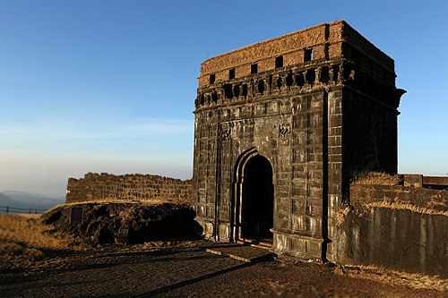
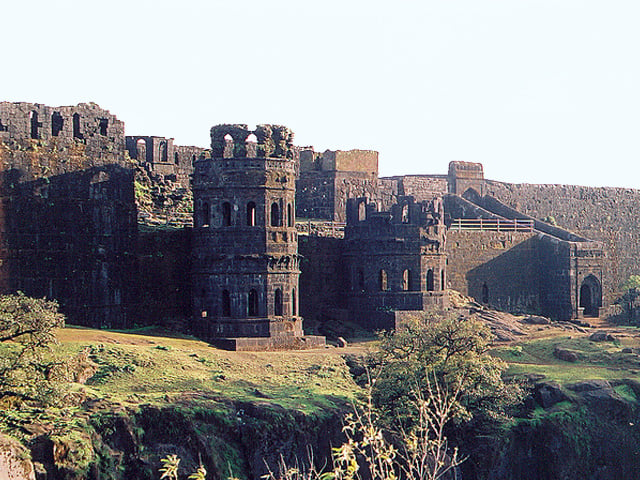
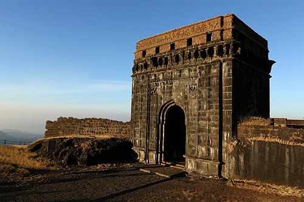
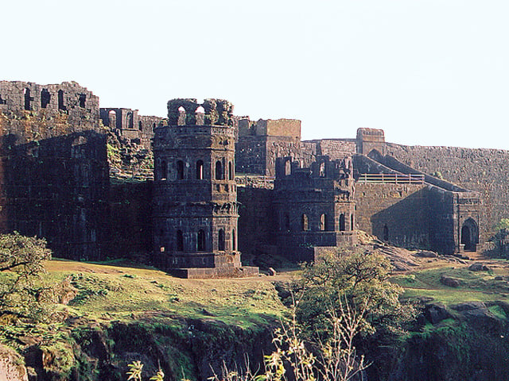
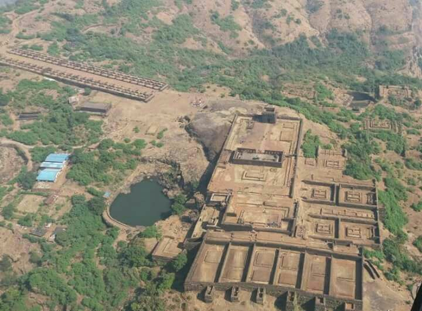
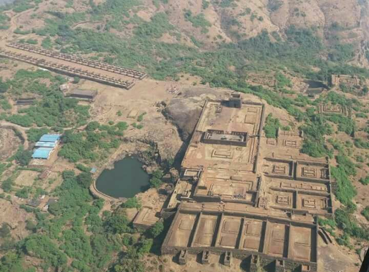
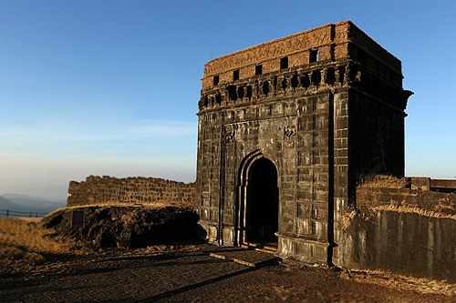
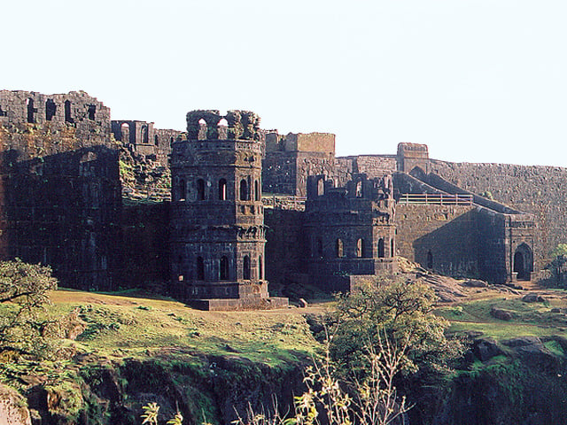
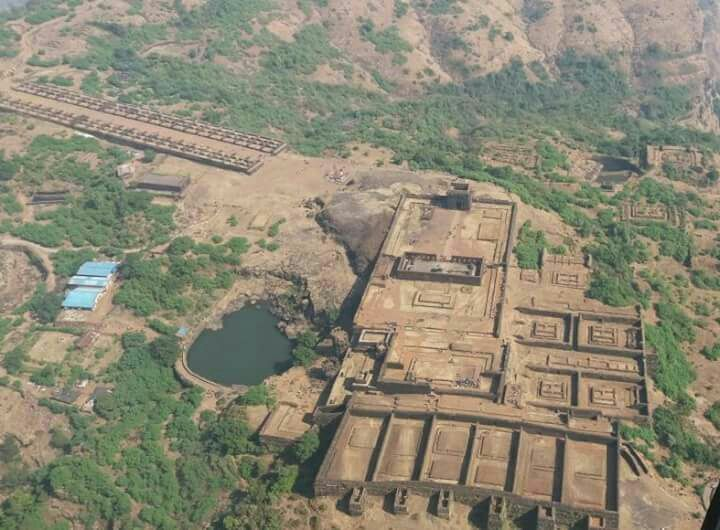

Images
 



 


Raigad Fort is a majestic hill fortress located in Maharashtra, India. It was the capital of the Maratha Empire under the rule of Chhatrapati Shivaji Maharaj. Situated at 2,700 feet above sea level, the fort offers breathtaking views and holds immense historical importance. Located at an elevation of 820 metres (2,700 ft) above its base and 1,356 m (4,449 ft) above sea level within the Sahyadri mountain range, the fort offers views of the surrounding area. The fort was home to around 1,550 people having an average family size of 5 people. Accessing the fort requires ascending approximately 1,737 steps. Alternatively, visitors can opt for the Raigad Ropeway, an aerial tramway spanning 750 m (2,460 ft) in length and reaching a height of 400 m (1,300 ft), which conveniently transports them from the ground to the fort in just four minutes.
Chhatrapati Shivaji Maharaj, the Maratha ruler, along with his chief engineer Hiroji Indulkar, did the construction and development of various buildings and structures, including Raigad. In 1674, after being crowned the king of the Maratha Kingdom of the Konkan, Shivaji Maharaj chose Raigad as the capital of his Hindavi SwaraOriginally built by Chandrarao More in 1030, Raigad Fort was later captured and rebuilt by Chhatrapati Shivaji Maharaj in 1656. It became the capital of his kingdom when he was crowned in 1674. The fort witnessed the rise of the Maratha Empire and remains a symbol of their pride and bravery.


